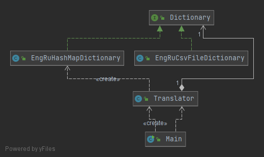

The previous CHANGES in the application helped a lot and brought some great feedback. Thus, for now our main priority is to widen the vocabulary of the dictionary up tp 1000 words. Luckily for us, developers from other team provided us with a new implementation of a dictionary, which uses external csv file.
The structure changed with the introduction of a new Dictionary implementation.
